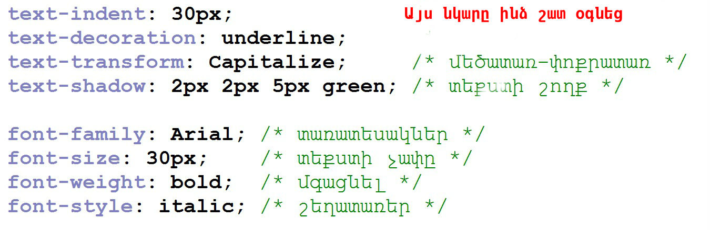
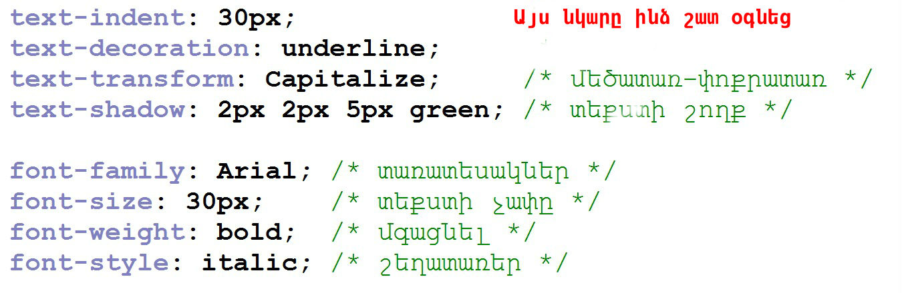

Բարև ձեզ,սկզբի համար ասեմ,որ մի փոքր դժվարությամբ եմ սովորել այս լեզուն,հատկապես սկզբում բայց հետո սկսեցի ավելի շատ,նոր և դժվար վարժություններ անել,ամրապնդելով իմ սովորածը և հիմա ես կարողանում եմ առանց դճվարության էջեր ստեղծել(կատարյալ չէ բայց սկսնակի համար լավ)։
HTML-ից սովորեցի head և body տեգերը որոնք գտնվում են html֊ում,հետո title֊որում նշում ենք փաստաթղթի վերնագիրը,հետո h1-h6 որոնցով սահմանում ենք վերնագրեր , p֊ն տեքստ գրելու համար , a֊ն հղում ստեղծելու համար, img֊ն նկար ավելացնելու համար,սովորեցի նաև html ֆայլը css֊ին կապելու ձևը։
Սովորեցի hr,br տեգերը,div տեգը,form֊ը,table֊ը,li֊ն, iframe֊ը և այլն; Երբ որ դժվարանում էի օգտվում էի weber.am կամ w3schools.com կայքերից,եթե չէի գտնում իմ ուզածը ապա դիմում էի իմ մարզչին։